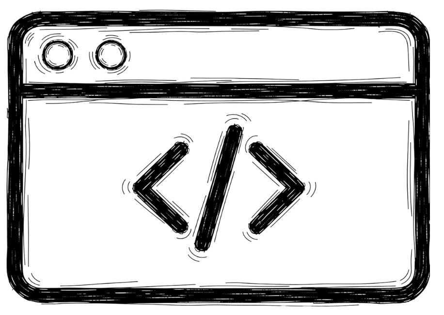

Web App
Certe cose non si risolvono con una pagina in più sul sito: serve uno strumento costruito su come lavorate davvero, che oggi semplicemente non esiste.
Lo strumento che vi serve non è in vendita: è il vostro modo di lavorare, scritto in software.
Partiamo dal processo che avete già in testa e nei fogli di calcolo, e lo trasformiamo in qualcosa che regge il carico di ogni giorno.

L'Excel condiviso ha smesso di reggere i volumi
Un'officina segna gli appuntamenti su un quaderno accanto al telefono, uno studio di commercialisti tiene le scadenze su un Excel che tre persone aprono nello stesso momento, le richieste dei clienti si dividono tra email e WhatsApp. Regge finché i numeri restano bassi, poi arrivano doppie prenotazioni, scadenze saltate e ore passate a rifare a mano cose che potrebbero girare da sole.
Una web app su misura non è un sito con qualche funzione in più: è uno strumento disegnato attorno al processo che hai già, che il team usa dal primo giorno senza dover cambiare il modo in cui ragiona.
Qualche esempio concreto
Gestionali interni
Un posto solo dove finiscono ordini, clienti e lavorazioni, invece di quattro file diversi su quattro computer diversi.
Dashboard e report
I numeri che contano su una schermata sola, aggiornati da soli, senza aspettare il riepilogo di fine mese.
Sistemi di prenotazione
Calendari, disponibilità e conferme automatiche, senza rincorrersi al telefono per spostare un appuntamento.
Portali riservati e fedeltà
Aree clienti con accesso protetto e programmi a punti, con le funzioni che ormai i clienti danno per scontate.
Dallo scaffale di carta allo strumento
Analisi del processo
Guardiamo come lavora oggi il team: cosa è manuale, cosa si ripete ogni giorno, dove si perde tempo e dove nascono gli errori.
Progettazione funzionale
Definiamo schermate, flussi e permessi prima di scrivere una riga di codice, così chi userà lo strumento può dire la sua quando cambiare costa poco.
Sviluppo e integrazioni
Costruiamo l'applicazione e la colleghiamo, dove serve, al CRM, ai calendari o al gestionale che usate già.
Formazione e avvio
Formiamo chi la userà tutti i giorni, la mettiamo online e restiamo accanto al team nelle prime settimane di uso reale.
Quello che ci chiedono prima di partire
Dipende dalla complessità: tra una dashboard di sola lettura e un portale con automazioni e integrazioni multiple c'è un ordine di grandezza. Prezzo e tempi arrivano dopo l'analisi del processo che vuoi digitalizzare, mai prima.
Quasi sempre sì, tramite API o esportazioni programmate. La fattibilità tecnica la verifichiamo durante l'audit iniziale, prima di scrivere qualsiasi preventivo.
I pannelli sono pensati per chi non scrive codice, e restiamo disponibili per manutenzione e nuove funzioni quando il lavoro cambia.
Spesso la web app si affianca al sito che hai già, come area riservata. Se il sito non c'è, valutiamo insieme se serve davvero o se lo strumento può bastare da solo.
Raccontaci come lavorate oggi
Mezz'ora senza impegno per capire se una web app risolve il problema, o se conviene prima sistemare gli strumenti che avete già.